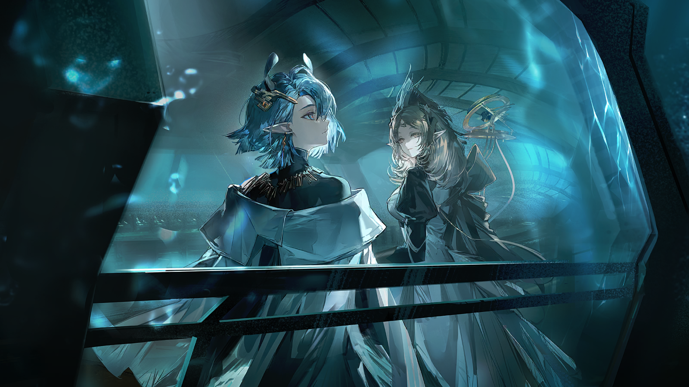
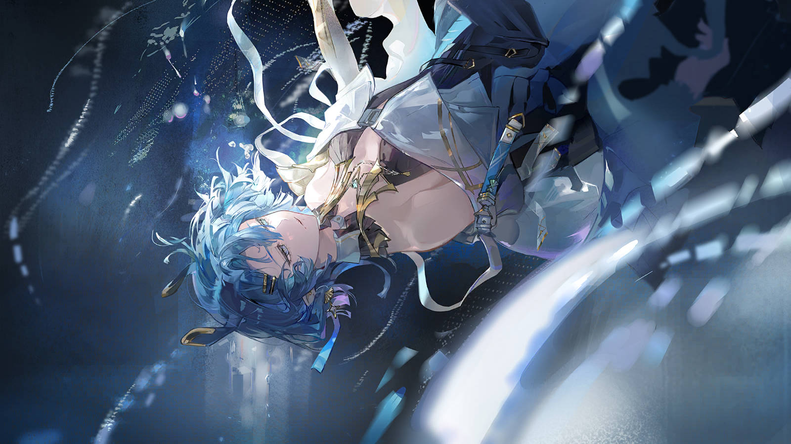

特菲
萨尔瓦多到底跑到哪里去了？他的宿舍没人，在他常去的店里也没看到他。

特菲
街上都是惩戒军的队伍，似乎是在处理岛民闹事……
？？？
“……圣徒在上……我愿遵循伊比利亚美德的化身的指引……”

特菲
是他的声音！

仇恨的岛民
圣徒会指引你？
仇恨的岛民
那如果他告诉你，今天你必须死在这里，你也会答应吗？
萨尔瓦多
你算什么……凭什么代伊比利亚的圣洁者发声？
萨尔瓦多
“祈祷诸位能驱使审判的灯火，洗涤我们的戴罪之身，祛除因罪而滋生的孽物。”
仇恨的岛民
戴罪之身？我们身上的罪不就是你们强加上来的吗！
萨尔瓦多
……
？？？
小心！

仇恨的岛民
你是那个唱船歌的黎博利……

特菲
你竟然记得我？看来我这个海军将领后裔还算威名远播啊。同胞——

仇恨的岛民
我不是你的同胞！
特菲
欸，这话就不对了。追溯到黄金时代，岛民和伊比利亚人本就是合作关系，岛民也会随王室海军舰队一同出行啊。
特菲
岛民个个都是人才，还带来了海里的技术，哪个渴望建功立业的贵族会拒绝将他们纳入自己的麾下呢？
仇恨的岛民
德·托莱多……一个骗子也想说服我吗？

特菲
我没有——
仇恨的岛民
我记得你，是因为那首歌曾是我儿时的摇篮曲，但现在为我唱歌的家人已经不在了，你知道他们去哪儿了吗？
特菲
呃……这个……
仇恨的岛民
如果你们有罪，不是因为过去的傲慢和狂妄，只是因为你们遗忘、抛弃，甚至仇视你们曾经的同伴。

南多
发现可疑岛民，已经逮捕。等等，你是？
特菲
又见面了啊，南多先生，我们在这里是因为……

南多
圣徒阁下和克莱门莎监事下令必须保障街区民众的安全，刚刚在邻近街道发现袭击者留下的爆炸物，已经及时排除，但这里仍不安全。
南多
我送你们回船厂。至于你们违抗命令跑出船厂的事情，斐戴拉大审判官会处理的。
特菲
正经的时候还挺靠谱的嘛……谢谢你。萨尔瓦多，我们走。
萨尔瓦多
……

艾丽妮
暂停一切出海清扫的工作，让已经出发的打捞工人迅速回航！
艾丽妮
清点人数，确认所有船工的位置和动向，保证他们的安全！

惩戒军士官
长官……

艾丽妮
我卸任审判官一事已经在审判庭公示，直接叫我的名字吧，士兵。
惩戒军士官
艾丽妮，刚刚接到岗哨通讯员发来的消息，灯塔的遇袭情况还在确认，现在所有进驻港都外围城区的惩戒军都已出动。
惩戒军士官
距灯塔的通讯信号被劫已经过去了半个小时，除了少数工人有参与袭击的嫌疑之外，船厂一切如常。
惩戒军士官
这里显然不是他们的目标。
艾丽妮
你想带领船厂的驻扎队伍支援灯塔？
惩戒军士官
是的。
惩戒军士官
这已经是半小时内的第五条通讯了……
惩戒军士官
就连负责日常治安的巡逻组都在执行紧急任务，我们却只能守着这群一无所知的船工，不断拒绝审判庭中枢发来的支援请求。

斐戴拉
我来吧。
惩戒军士官
斐戴拉阁下……
斐戴拉
大审判官斐戴拉。
斐戴拉
船厂的守军不会前去支援，是我下的命令。
斐戴拉
哪怕整个供能矩阵都在袭击中毁于一旦，我手下的惩戒军也必须坚守在各自的岗位上。
斐戴拉
海嗣？
斐戴拉
……
斐戴拉
是的，惩戒军必须驻守船厂，这是命令。我们捍卫的是伊比利亚的未来。
斐戴拉
最后重复一次，我们不会前去支援。

艾丽妮
……
斐戴拉
艾丽妮，你明白我的职责。
艾丽妮
当然！圣徒阁下让您驻守船厂，这是对打捞计划最好的安排，您需要船厂的所有人员坚守在自己的岗位上，我理解。
斐戴拉
但你不是船厂的人。

艾丽妮
长官？
斐戴拉
而且，作为审判庭信使，你有资格在紧急状态下调用一支小队。
斐戴拉
无法理解命令的士兵很难坚守信念，我经历过他们正在经历的一切，所以我知道他们不想看着自己的同僚牺牲，而自己却无能为力。
斐戴拉
带着刚刚那支惩戒军小队去支援大部队吧，他们若想牺牲在前线，这是他们的选择。
艾丽妮
是！
？？？
挂断了？想找个审判庭的人来帮忙就那么难吗？
？？？
现在的大审判官听到海嗣都不跳脚了吗？船厂有什么天大的任务啊，能让她不在乎我这边这么麻烦的情况……

德鲁莎
海嗣标本、炼金仪器，还有些百年前的收藏品……幕后的组织者似乎年纪不小啊。
黑发的阿戈尔人在老旧的地板上发现了未干的溟痕，它们一路蔓延至房间的尽头。
德鲁莎
一语成谶啊……

恐鱼
（柔滑地爬行）
恐鱼
（谨慎地探知）
德鲁莎
你们里面，哪位是幕后组织者？
恐鱼
（翕动薄膜）
恐鱼
（扭动触须）

德鲁莎
开个玩笑——哦，不过你们估计也不会笑。

德鲁莎
唉，数量还不少，真讨厌这些花招多的人。要么他未卜先知猜到了我和克莱门莎的计划，要么他就是个鼷兽一样谨慎的人。
德鲁莎
虽然我很想就这么一走了之，但你们的出现至少已经证明了一点——那位组织者的目的与海嗣有关。
德鲁莎
看来得带点纪念品给克莱门莎了。
阿戈尔人弹了弹腰间打卷的“衣带”，它们柔韧得如同海嗣的触手，却发出了金属的清脆声响。这副武器很少出鞘，却被保养得极好。
海嗣们不会明白，现在站在自己面前的，是用实战打磨自己，也打磨出无数惩戒军的教官。
德鲁莎
希望她不介意礼物被拆得太碎。
惩戒军士官
克莱门莎监事，圣徒阁下已经到达岗哨，正在指挥行动。
惩戒军士官
我们初步判定，袭击者是对伊比利亚心怀不满的岛民，他们袭击供能灯塔，意在破坏打捞计划。
惩戒军士官
现在通讯尚未恢复，构成整个供能矩阵的三十七座灯塔分散在港都周边的海岸、山地等各处，排查严重受阻。
惩戒军士官
我们需要您的帮助。

克莱门莎
距离通讯中断过去了多久？
惩戒军士官
十二分钟。

克莱门莎
如果岛民的目标就是破坏供能灯塔，那留给我们的时间不多了。
克莱门莎
供能灯塔矩阵对打捞中心至关重要，破坏任何一座灯塔都会对起重机的功率产生影响。
克莱门莎
我们需要知道他们的人数和动向。
惩戒军士官
调取供能系统的报告的话，是不是可以从数据上发现线索？
克莱门莎
如果供能系统里有线索，那它现在应该已经在报错了。
惩戒军士官
可恶，我们现在只能等待驻守灯塔的小队回到岗哨集合才能得到更多消息，但这样一来就太慢了。
惩戒军士官
巡逻组发现并拆除了一些分散在街道上的爆炸物，袭击者似乎有意制造更大的混乱。但除此之外，外围城区里找不到其他任何线索。
克莱门莎
他们既然谋划已久，总该留下过什么痕迹，哪怕那些痕迹不在陆地上，而在……

克莱门莎
而在大海里？
声音，不，是水流的震动从几公里之外的深海传来，扰动体侧线的神经丘，激起皮肤的战栗。
哪怕失去视觉和肢体，大海的信息也在源源不断地向自己的位置汇总，她能感受到一切。
……克莱……门莎……
……听见了吗……我的小魔鬼鱼……

克莱门莎
赫拉提娅……

赫拉提娅
我倒不知道用神经缆线操纵舰船也能令人上瘾。幸好我能承受你独特的驾驶技术，不然上一次腾跃的时候，我已经倒下了。
赫拉提娅
还是没有睡意？
克莱门莎
如果驾驶舰船就能让我睡着，我也不会在深更半夜用小型浮游舱拐走科学发展规划所最优秀的执政官了——而她正巧也在失眠。
赫拉提娅
所以，现在我们在哪里？

克莱门莎
阿戈尔信号覆盖范围的边缘。
克莱门莎
向北航行十五米，我们就会彻底脱离信号范围，与本境失去联系。
赫拉提娅
不错的放松方式。游离在喧闹与寂静之间，暂时和我们的国度保持距离，才能更好地看清它。
赫拉提娅
如果不是贪婪成性的海嗣，即使再向前航行几十海里，你依然能接收到阿戈尔的信号。
克莱门莎
撇去正在蚕食城市的海嗣，我觉得现在这样正好。你想要全泰拉都听到阿戈尔的声音？
赫拉提娅
这是我们的义务，不是吗？阿戈尔的现状足以证明我们是最接近未来、最有希望逃脱被毁结局的国家。
克莱门莎
我毫不怀疑，航道计划一旦成功，你就会向泰拉陆上诸国发出声明，而他们一定会认为阿戈尔是傲慢的。
赫拉提娅
谦卑不会带来成功，只会拖慢我们的脚步。
克莱门莎
这样的对话，在上个月已经发生过一次了，只不过那次是在科学发展规划所的会议室里。
赫拉提娅
你在军团服役过，后来又担任执政官游走于各个城市，我毫不怀疑你对阿戈尔的爱，但当我们谈论这些话题时，你总是露出犹豫的表情。
克莱门莎
我还没有得出结论，赫拉提娅。
克莱门莎
但我很肯定，就像你休息的时候喜欢望着泰拉的精密地图发呆，思考阿戈尔该如何与那些国家合作，如何解开终极问题的答案——
克莱门莎
我喜欢一个人在一艘小型浮游舱里连接神经缆线，让信标发射井记录的所有信息涌入我的大脑。
克莱门莎
哪怕距离遥远，我依旧能听到等待联络的忙音、安眠的歌，还有蛰伏在洞穴之中的海嗣的低鸣。
克莱门莎
我想，在爱阿戈尔之前，或许我爱的是这片海洋。
克莱门莎望向浮游舱外，双月的光芒浸泡在无边的海水中，被稀释得很淡很淡。
层层叠叠的波光笼罩在舱内的二人身上，如同克莱门莎手指上的神经缆线，亮起无数细小的光点。
她在用自己的思维描摹她的阿戈尔，她感受着大海传递给她的，过去和未来的信息。
克莱门莎
海中的信息……
克莱门莎
如果调取的不仅仅是供能系统的数据，还有大海感受到的每次波动，或许能找到突破点。
惩戒军士官
大海的波动？这怎么可能……
克莱门莎
弥利亚留姆信标发射井的系统与伊比利亚海岸的灯塔系统一脉相承，这也是海陆联合防线建立的物理基础。
克莱门莎
时间不会对任何人宽容，无论袭击者多么小心，准备得越久，留下的痕迹也就越多。
克莱门莎
只要获取信标发射井监测到的所有数据，就能还原出伊比利亚海岸线上的所有信号扰动，找到遇袭灯塔的位置。
惩戒军士官
可是，克莱门莎监事，弥利亚留姆与打捞中心相距甚远，信号恐怕非常微弱。即使能探测到信号，如此海量的数据，又要如何筛选？

克莱门莎
交给我，先生。
温和的阿戈尔前执政官安抚性地拍了拍士兵的肩膀，随即从身侧的口袋里拿出了一瓶未知的药剂，一饮而尽。
克莱门莎的神色稀松平常，仿佛只是整理了一下裙摆。这时惩戒军才发现，她的手指上戴着罕见的金属指套。
它们不是武器，也并非用于保护，指套上连接的神经缆线遵循着某种节律发亮、搏动，像是在呼吸，抑或是思考。
克莱门莎
我会倾听伊比利亚的声音。
克莱门莎
小帮手，帮我联系歌蕾蒂娅，我要调取弥利亚留姆信标发射井的信息。
？？？
克莱门莎执政官，哦不，现在应该叫克莱门莎监事了。好久不见。
？？？
知道你肯定更想见剑鱼，但队长她现在正在巢穴里跟一大群海嗣跳舞，实在没空。
？？？
唔，你那边怎么围了那么多人？稍等，我刚刚结束任务，还没来得及清理裙摆和头发——
幽灵鲨
好了。
克莱门莎
辛苦了，猎人。
幽灵鲨
多谢关心。需要我做什么？依我对克莱门莎监事为数不多的了解，你不会是亲自将麻烦请进门了吧？
克莱门莎
我需要借用你在弥利亚留姆的信息传输权限，将信标发射井一周内探测到的所有信息发送给我。
幽灵鲨
哇哦，所有信息？每一次涨潮，每一支洋流，每一尾鳞的游动都会经过编译变成存储在信标发射井中的数据，数量可不小。
幽灵鲨
我应该把它们传送到哪个终端？
克莱门莎
这里。
克莱门莎用连接着神经缆线的手指轻轻点了点她的太阳穴。
幽灵鲨
这个玩笑可不有趣……不用我提醒，你知道自己的神经中枢很有可能因为生物电信号过载而瘫痪吧？
幽灵鲨
虽然交流不多，但我个人还挺喜欢你的。况且，我可不希望背上谋杀同胞的罪名——
幽灵鲨
啊，不过好像在海嗣的视角里，我们已经背了这种罪名好多年了。
克莱门莎
不用担心，深海猎人挂靠的军团在弥利亚留姆的管辖之下，我会联系代理执政官免除你的嫌疑。
幽灵鲨
你要是能活着，我也就没有嫌疑了。
克莱门莎
请安心，我会的。
一秒，或是两秒。
通讯挂断的那一刻，打捞中心的监测面板和十几台小帮手同时停止了一瞬，像是站在海啸面前无法躲避的过客。
克莱门莎感受到自己的指尖微微发烫，神经缆线上的光点疾速跳动，让她只来得及最后深吸一口气——
就被扔进了一周之前无边际的大海之中。

她在水中睁开双眼，凝视着庞大数据流构成的漆黑海洋。
大海从未如此嘈杂。
阿戈尔城市引擎的叶片一刻不停地转动，猎人们从海嗣群中穿过，护航舰船调整航行角度，留下细小的涡流……
但她来不及感慨她的城市，她的家。
无数信息漫过她的身躯，克莱门莎清楚自己的感知正在陷入混乱，眼眶也在发烫。
她像无数次浮游在远离阿戈尔的海面上那样，倾听所有，哪怕是一个微小的电信号，或是一次水流的扰动。
在汪洋的边缘，那是阿戈尔与伊比利亚模糊的界线，信标发射井所能覆盖的最远处，也是更接近答案的地方。
克莱门莎相信，大海会托载它的住民，一直向上，向上。
直到跃出水面，直到……

克莱门莎
呼……
惩戒军士官
克莱门莎监事！您还好吗，医疗小队在哪里！

克莱门莎
八号……十七号……灯塔……供能电缆的信号……在三天前出现过一次闪断……
克莱门莎
我听见了气泡在管道内流动……是我们的设备……是那群可怜的、充满仇恨的人……
克莱门莎
异常数据已经被筛选出来，依照时间线整理成报告……你们可以比对嫌疑人的行动路径……
惩戒军士官
谢谢，克莱门莎监事。可您……额头全是冷汗，呼吸和心跳过快，像是缺氧……
克莱门莎
行动吧。
惩戒军士官
……明白。
警惕的岛民
进度还差多少？
焦急的岛民
百分之三十。
焦急的岛民
整片供能灯塔矩阵采用的是同种光学辅助系统，它是供能系统中必不可少的一环，同时也是审判庭的眼睛。
焦急的岛民
失去视野之后，审判庭很难定位到我们的位置。
警惕的岛民
而且一个小时之前我们已经劫持了灯塔的通讯信号，惩戒军队伍之间必须搭建临时通讯渠道，这会为我们争取更多的时间。

深海教徒
我在海岸线上看到了审判庭的灯火！

警惕的岛民
怎么可能？
警惕的岛民
我们行动很谨慎，应当没有留下什么痕迹。
警惕的岛民
十七号灯塔？呼叫十七号灯塔！
无线电
……
警惕的岛民
该死！

惩戒军士兵
口舌留到审判庭地牢里为自己辩解吧。
惩戒军士兵
封锁灯塔！
艾丽妮
克莱门莎监事已经确认遇袭灯塔的位置，惩戒军已经到达现场，我们需要做好一切收束工作。
艾丽妮
切记，暂时不要将这次行动的细节公开给民众。
惩戒军士兵
明白！

小帮手
（发出警鸣）

艾丽妮
这是……克莱门莎监事的小帮手？
小帮手
（转动拖拽模块）
艾丽妮
是你把这个受伤的人拖过来的？等等，她是……

德鲁莎
……帮我联系克莱门莎。
艾丽妮
德鲁莎教官！
焦急的岛民
哈……哈……
焦急的岛民
还好我们给自己留了后路，快走吧。
愤怒的岛民
可任务还没有完成！
焦急的岛民
赶紧走吧，你一直在流血。
愤怒的岛民
只能在这里躲一阵子，审判庭的经棍迟早会找上我们。
焦急的岛民
可再这样下去，没等审判庭抓住你，你就已经……
？？？
按住伤口，我带你们离开。
愤怒的岛民
纳乔？你来这里做什么……

纳乔
别说话，盖乌斯，你流了好多血，我先给你包扎。
愤怒的岛民
没有……没有那个被我用捕鳞钩捅了大腿的经棍流的血多……嘶！

纳乔
抱歉，下手重了一点。
纳乔
我会带你们从水下离开。
愤怒的岛民
你选择站在我们这边？

纳乔
不，我只是不想再看到任何岛民跟阿奎拉一样满怀愤怒地死在狱里。
愤怒的岛民
反抗总会伴随着牺牲。
纳乔
至少我现在能救下你们，让你们活到转机可能会出现的时候。
纳乔
走吧。